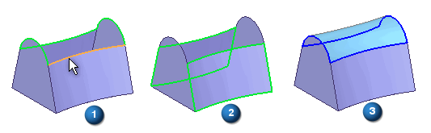
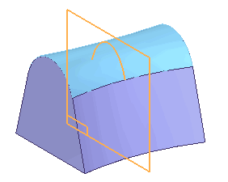
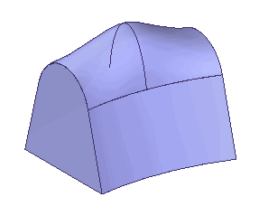

Bounded Surface command
Use the Bounded surface command to create a construction surface using boundary elements you define. The boundary elements can be curves or edges and they must define a closed area (1). You can also specify whether any adjacent faces (2) are used to control tangency on the new bounded surface (3).

-
The curve/edge set must form a closed loop.
-
Adjacent faces can be used to control tangency on the new bounded surface.
-
The preparation of edges/curves to be utilized may require the use of the derived curve and split curve commands.
-
The keypoint curve command can be used to generate a boundary curve.
Inserting sketches
You can use the Insert Sketch Step on the command bar to add new sketches to a Bounded feature. The geometry for the new sketch is created by intersecting a reference plane you define with the Bounded feature. You do not have to create the sketch geometry yourself. When you insert a sketch, the new geometry is a created as a B-spline curve. If you want the new geometry to consist of lines, arcs, or circles, you must create the new sketch manually outside of the Bounded surface command.
When you click the Insert Sketch button on the command bar, plane creation options are added to the command bar so you can define the position for the new reference plane. For example, you can use the Parallel Plane option to define an offset reference plane where you want additional control over the resultant surface.

You can then edit the sketch to change the surface shape.

When you add a cross section or guide curve to an existing Bounded Surface feature using the Insert Sketch option, the new sketch is connected to the cross sections or guide curves. You can use the Bounded Surface Options dialog box to specify whether Pierce Points or BlueDots are used to connect new section to the surface.
BlueDots are only available in the ordered modeling environment
-
Pierce points
When you set the Use Pierce Points option, connect relationships are used to tie the inserted sketch to the cross sections or guide curves it intersects. When you set the Use BlueDots option, BlueDot elements are used to tie the inserted sketch to the cross sections or guide curves it intersects. The option you specify also affects how you can edit the feature later.
When you connect the new sketch using the Use Pierce Points option, you can modify the cross sections or guide curves the new sketch intersects and the B-spline curve for the inserted sketch will update. The Use Pierce Points option is most suitable for models that must conform to engineering data or dimension-driven criteria, such as turbine blades, fan housings, and so on. The Use Pierce Points option maintains the existing parent/child history of the model.
-
BlueDots
If you are working with a Bounded Surface in the ordered environment, and you insert a sketch using the Use BlueDots option, you can also modify the Bounded Surface feature by editing the position of the BlueDots using the Select Tool and the BlueDot Edit command bar. When you move a BlueDot, the portion of the sketches that are controlled by the BlueDot update, and that portion of the BlueSurf also updates.
The Use BlueDots option is most suitable for ordered models that are driven by esthetic requirements, such as consumer electronics products, bottle and container design, and so on. When you use BlueDots to connect an inserted sketch, moving a BlueDot can also change the location of the reference planes of the sketches it connects.
This is because a BlueDot allows you to override the existing parent/child history of the model. For example, if you insert a sketch using a parallel reference plane with an offset value of 25 millimeters, editing the location of the BlueDot can also change the offset value of the reference plane.
This behavior can be preferable when exploring the esthetic possibilities of a surface, but can be counter-productive when working with engineered surfaces. In some cases, using BlueDots can also cause a model to take longer to update, because moving a BlueDot may require more of the model to recompute than a connect relationship would.
Note:When you set the Use BlueDots option on the Bounded Surface Options dialog box, but existing constraints prevent BlueDots from being created, pierce points are created instead.
How do I
Construct a bounded surfaceLook up more details
Bounded Surface command barBounded Surface Options